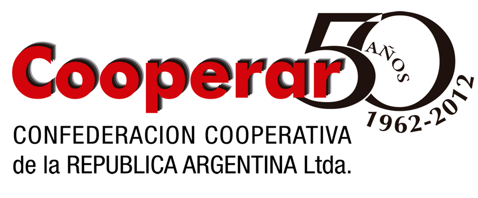
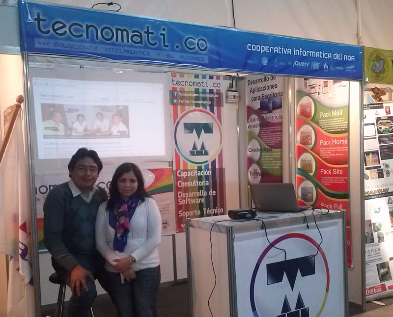
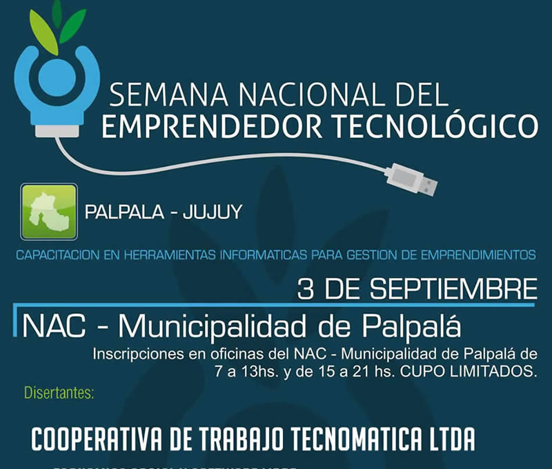

tecnomati.co
Cooperativa Informática
 Farid Diego Astorga
Farid Diego Astorga@dmportal
Nuestra breve historia
Somos un grupo de compañeros y amigos de la UNJu.

Emprendimientos
individuales...
Utilizando tecnologías y herramientas informáticas.
- Empresas unipersonales
- Mantenimiento y reparación de PCs
- Apertura de Cyber Café
- Participación en Proyectos
- Clases de apoyo y tutorías

Tecnologías y conceptos...
Orientados a la utilización de Software Libre y apoyados en la filosofía de esta comunidad.


¿Por qué una Cooperativa?
Fundamentos, principios, valores y motivaciones.
¿Que es una Empresa
Cooperativa?
cooperativismo promueve formas de organización que potencian el trabajo colaborativo y mejora, según nuestro modo de ver, los procesos de desarrollo. Las cooperativas son empresas democráticas, que se interesan por el desarrollo de la comunidad en la que viven.
Empresa Cooperativo
vs
Empresa Capitalista
- Objetivos
- Ganancias
- Integrantes
- Organizacion
- Participacion
- Organo Administrador
Principios y Valores
Principios
- Libre Adhesión
- control democratico de los socios
- participacion economica de los socios
- autonomia e independencia
- educacion, entrenamiento e informacion
- cooperacion entre cooperativas
- compromiso con la comunidad
Valores
- Ayuda mutua
- Responsabilidad
- Democracia
- Igualdad
- Equidad
- Solidaridad
El día a día...
Organización, medios y tgit ecnologías utilizadas
Características de nuestra organización
- Consejo de Administración.
- Gerente de Ventas, Contador y Síndico.
- Líderes de Grupos de Trabajo.
- Asociados responsables de una tarea.

Herramientas que facilitan la comunicación...
Alojamiento en la nube
Dropbox y Google Drive
Se trata de herramientas de sincronización de archivos a través de un disco duro o directorio virtual. Permite disponer de un directorio de archivos (de cualquier tipo) de forma remota y accesible desde cualquier ordenador. Es decir, crea una carpeta en nuestra Pc y realiza una copia a través de Internet de todos los archivos que depositemos en ella.
Caracteristicas de Dropbox
- Se sincroniza a traves de una carpeta fija y se puede navegar entre los archivos en una interfaz.
- El usuario puede compartir archivos y carpetas con otras personas y hasta con enlaces publicos.
- Ofrece 500MB adicionales por cada persona que use tu enlace para crear una cuenta. Es buen soporte para aplicaciones.
Caracteristicas de Google Drive
- Posee un navegador de archivos, visor de imagenes, capacidad de edicion con la interfaz de Google Docs.
- Integracion con Gmail y Google+.
- Los desarrolladores podran usar Google Drive para integrar servicios y aplicaciones web.
- Ofrece 5 GB de espacio gratuito.
¿Qué es Trello?
Es una herramienta de colaboración, que nos trae una nueva forma de organizar los proyectos en un panel, tabla, pizarra, como quieras llamarlo. La herramienta Trello te informa en lo que se está trabajando en ese momento, o que tarea está en proceso en cierto momento. Ayuda al equipo trabajar y mantenerse organizado, concentrado en la tareas correcta.
La idea básica de Trello
Se podría decir que Trello es una forma de organizar las tareas del proyecto en listas, una lista de listas. La idea ayudar a los integrantes del proyecto no perder de vista sus tareas.
Cada proceso o tarea se crean en tarjetas (tipo un post-it), además permite controlar ciertos aspectos del proyecto como:
- Lista de tareas asociadas a cada artefacto de trabajo.
- Asignar miembros a cada tarea o proceso.
- Establecer hitos, fechas de vencimiento.
- Administrar las etapas de del proyecto.
¿Que es Skype?
Skype es un software que permite hacer llamadas y videollamadas gratis, enviar mensajes instantáneos y compartir archivos con otras personas que usan Skype. Puedes usarse: en tu teléfono móvil, equipo informático o TV con Skype. Además, con un poco de dinero, puedes hacer mucho más: llamar a teléfonos, tener acceso a una red WiFi, enviar mensajes SMS y hacer videollamadas grupales. Se puede pagar a medida que lo usa o comprar un plan, lo que prefieras.
Usos de Skype
- Comunicación gratuita por texto, voz o vídeo entre dos usuarios de Skype.
- Comunicación grupal o conferencia de voz gratuita entre varios usuarios de Skype.
- Generación de llamadas de voz a bajo costo desde un usuario de Skype, hacia teléfonos de red fija o móvil.
- Comunicación y envío de datos a bajo costo hacia equipos de fax conectados a redes de telefonía fija.
Logros Obtenidos
Repercusiones en los medios
Miembros del Facttic
Miembros de Cooperar
Participacion en la FeriNOA
Participacion
en Expo NOA-NEA
Tucuman

Participacion en las Jornadas Nacionales del Emprededor Tecnologico
Publicacion en el Colegio
de Ingenieros de Jujuy